要研究Kafka，阅读Kafka源码是必不可少的环节。因此，本节将介绍Kafka源码编译及将编译后的源码导入Eclipse的具体步骤。当然也可以将Kafka源码导入其他IDE（如Intellij Idea、STS等）中，大家选用自己惯用的IDE即可。源码导入步骤与导入Eclipse操作基本类似，本书不再做详细介绍。这里只讲解在Windows操作系统下Kafka源码的编译，在其他操作系统上对Kafka源码的编译操作基本类似，只不过添加环境变量操作有所不同，这里不做讲解，读者可以查阅相关资料进行了解。由于Kafka核心模块是用Scala语言开发，用Gradle编译和构建的，因此下面先介绍相关环境的安装配置。
由于0.10.1.1版本的Kafka需要Scala版本在2.10以上，因此这里选择scala-2.11.8版本进行安装。
（1）下载并安装。先进入Scala官方网站http://www.scala-lang.org/download/下载相应的安装包，下载图2-4所示版本的Scala。
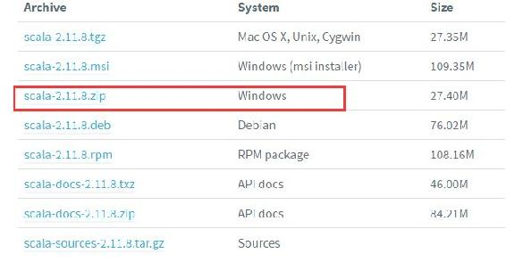
图2-4 Scala安装包下载列表
下载完成后，直接将安装包解压到指定目录即完成安装，安装时解压到D:\software\scala- 2.11.8目录下。
（2）环境变量配置。安装完成后，配置Scala运行环境变量，在系统变量中新增Scala安装路径配置，编辑系统变量配置如图2-5所示。
然后将;%SCALA_HOME%\bin添加到用户变量path中。与JDK环境安装配置一样，直接添加至自定义的用户环境变量CLASSPATH中，如图2-6所示。
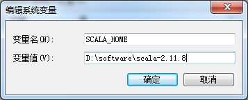
图2-5 新建SCALA_HOME变量指定Scala安装路径
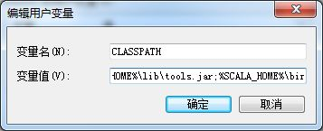
图2-6 修改CLASSPATH添加Scala环境变量
（3）验证。Scala安装及环境变量配置完成后，在Windows下打开一个cmd命令行终端。输入查看Scala版本信息的命令：
scala -version # 查询Scala版本若输出以下信息则表示Scala安装配置成功：
Scala code runner version 2.11.8 -- Copyright 2002-2016, LAMP/EPFL进入Gradle官方网站https://gradle.org/releases/下载Gradle安装包。本书编写时Gradle的最新版本为gradle-3.3，这里下载的就是这个版本，读者可以根据自己需要选择不同版本进行下载。下载后将Gradle文件解压到相应目录，这里将Gradle解压到D:\software\gradle-3.3目录下，安装及环境变量配置与Scala操作一样，新增系统环境GRADLE_HOME，指定gradle安装路径，并将;%GRADLE_HOME%\bin添加到path中，这里依然是添加到CLASSPATH之中。
Gradle安装及环境变量配置完成之后，打开Windows的cmd命令窗口，输入gradle –version，若输出如图2-7所示信息，则表示Gradle安装配置成功。
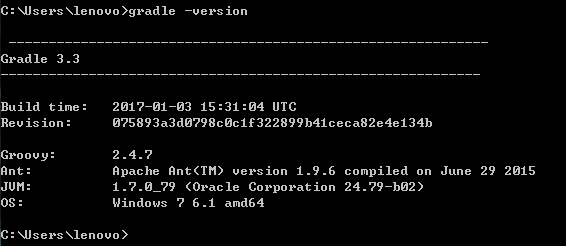
图2-7 Gradle安装验证结果
先进入http://kafka.apache.org/downloads.html下载Kafka源码文件。本书编写时Kafka的最新版本为kafka-0.10.1.1，这里我们下载的是kafka-0.10.1.1-src.tgz，将下载的源码包放在F:\kafka-0.10.1.1目录下，解压后如图2-8所示。
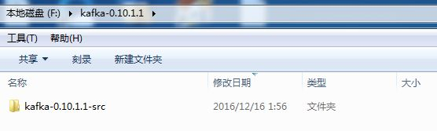
图2-8 Kafka源码解压后的文件目录
进入kafka-0.10.1.1-src，Kafka源码包括图2-9所示的目录及文件。
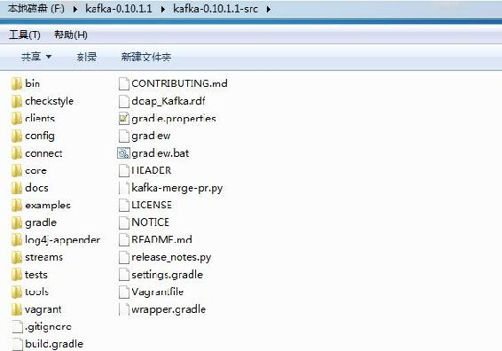
图2-9 Kafka源码包括的目录及文件
Kafka源码对应目录及文件说明如表2-4所示。
表2-4 Kafka源码对应目录及文件说明
|
名 称 |
描 述 |
|---|---|
|
bin |
包括Windows和Linux平台下Kafka相关操作的执行脚本，如启动和关闭KafkaServer、创建主题、分区管理、模拟生产者和消费者基本操作的脚本等 |
|
clients |
Kafka客户端，包括KafkaProducer和KafkaConsumer，用Java语言开发 |
|
config |
Kafka运行相关配置文件，如在启动代理时需要加载的server.properties文件 |
|
connect |
0.9版本之后新增加的特性，提供了Kafka与其他系统整合进行数据导入、导出操作的统一接口，为Kafka能够与其他系统整合构建可水平扩展、高可靠的数据流处理平台提供了一个简单模型，用Java语言开发 |
|
core |
Kafka的核心代码，包括消息协议定义、日志管理、各组件之间通信、安全协议等 |
|
docs |
Kafka官方网站相关文档 |
|
examples |
Kafka实例代码 |
|
streams |
Kafka 0.10版本之后增加的新特性，是一个用来构建流处理程序的库，用Java语言开发 |
|
tools |
Kafka提供的工具类，用于查看生产者性能、吞吐量等 |
|
tests |
系统测试脚本 |
由于在Kafka源代码的gradle子目录中没有wrapper类库，因此在Kafka根目录下执行gradlew eclipse命令时会报图2-10所示的错误。
图2-10 Kafka源码编译出错信息
接下来安装wrapper类库。由于本地安装的Scala版本为2.11.8，在安装wrapper类库之前，先修改Kafka源码目录下的gradle.properties文件，将Scala版本设置为2.11.8。gradle.properties文件内容如图2-11所示。
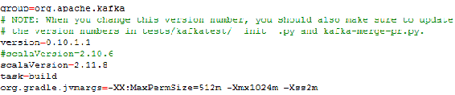
图2-11 gradle.properties文件内容
然后进入Kafka源码根目录下，执行gradle wrapper命令来下载wrapper包，如图2-12所示。
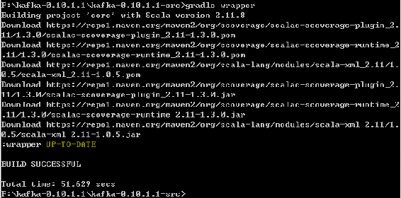
图2-12 wrapper安装过程输出信息
在该命令执行过程中会下载相应的jar文件，待完成相应文件下载后，若在控制台打印输出“BUILD SUCCESSFUL”字样则表示安装wrapper类库成功。执行成功后会在Kafka源码的gradle目录下生成wrapper目录，如图2-13所示。
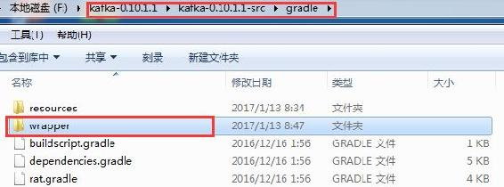
图2-13 wrapper安装过程创建的wrapper目录
进入wrapper目录，在该目录下已创建了一个gradle-wrapper.jar文件，如图2-14所示。
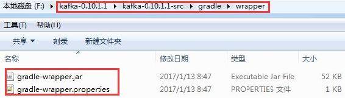
图2-14 wrapper安装过程生成的文件
最后在Kafka源码根目录执行gradlew eclipse命令，对Kafka源码进行编译。这个过程由于要下载一系列依赖包，因此有些耗时，若出现“BUILD SUCCESSFUL”字样，则表示编译完成，如图2-15所示。
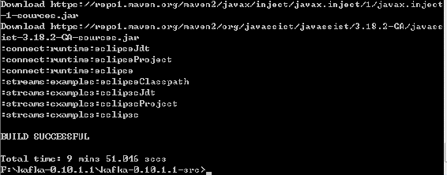
图2-15 Kafka源码成功编译输出日志信息
若读者在编译时输入gradlew eclipse命令后控制台打印日志输出：
Downloading https://services.gradle.org/distributions/gradle-3.3-bin.zip
.........................一直卡在下载gradle-3.3-bin.zip时，可通过下载工具先下载gradle-3.3-bin.zip文件，然后复制到C:\Users\用户名.gradle\wrapper\dists\gradle-3.3-bin\37qejo6a26ua35lyn7h1u9v2n目录下，接着再次运行gradlew eclipse命令进行编译。
通过前面的步骤已完成了Kafka源码的编译，现在介绍如何将Kafka源码导入Eclipse。在Eclipse视图中选择“import”，在弹出对话框中选择“Existing Projects into Workspace”，指定Kafka源码路径，依次导入Kafka源码中的core和client工程。导入项目后，若Eclipse的编码方式不是UTF-8，会有错误提示，读者在导入Kafka源码时要确保Eclipse已设置workspase的编码方式为UTF-8，同时建议修改Scala使用的JVM版本为1.8，如图2-16所示。
Eclipse工作空间环境配置完毕后，导入Kafka的core和client工程，如图2-17所示。
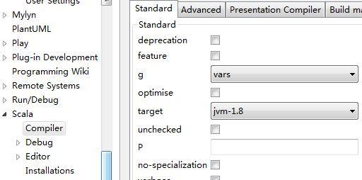
图2-16 Eclipse设置工程Scala运行的JVM版本界面
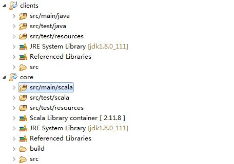
图2-17 Kafka源码导入Eclipse效果
若在Eclipse中看到core工程有错误提示信息，则在core工程上右键配置“build path”，在Libraries视图下可以看到缺失如图2-18所示的两个文件，这两个文件都是core工程测试代码所依赖的文件，并不影响core工程本身的运行。这里为了简单，直接将这两个文件从Libraries中移除。
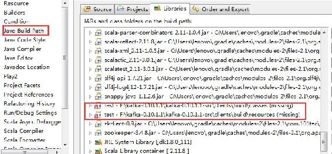
图2-18 Kafka core报错所缺失的文件
若直接运行core工程，kafka.kafka.scala会报出如图2-19所示的错误信息。
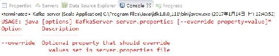
图2-19 Eclipse启动Kafka时在控制台输出的错误信息
图2-19所示的错误是由于Kafka启动时需要加载server.properties文件，用于初始化KafkaServer，因此在运行kafka.kafka.scala启动KafkaServer时，需要指定一个配置文件。KafkaServer初始化的配置这里暂不进行详细介绍，将穿插在第3章至第6章对Kafka相关知识的讲解中进行介绍。现在，在Eclipse中设置运行参数，指定server.properties文件路径，配置如图2-20所示。由于Kafka依赖ZooKeeper，因此要保证在启动KafkaServer之前先启动ZooKeeper。
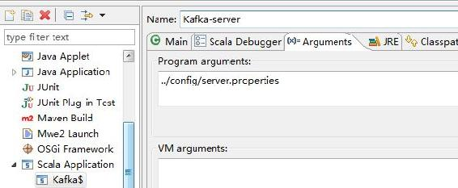
图2-20 Eclipse设置Kafka启动加载配置文件界面
为了在控制台输出启动日志，需要将Kafka源码config目录下的log4j.properties文件复制到Eclipse core工程src/main/scala目录下，运行kafka.scala启动KafkaServer，Eclipse控制台输出启动日志信息如图2-21所示。
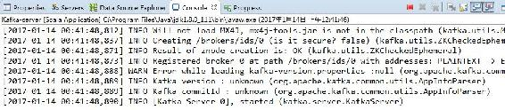
图2-21 Eclipse启动KafkaServer输出结果
图2-21所示的日志信息表明：Kafka源码已成功在Eclipse中运行起来。接下来就可以调试Kafka，深入了解Kafka运行机制了。